<title>La Libreria in vetro adattivo</title>
<link rel="stylesheet" href="https://fonts.googleapis.com/css2?family=Atkinson+Hyperlegible:ital,wght@0,400;0,700;1,400&family=Bricolage+Grotesque:opsz,wght@12..96,500;12..96,700&family=IBM+Plex+Mono:wght@500&display=swap">
<style>
/* Come la pagina di G1: una testata corta, le misure prima e dopo, poi una matrice situazione x versione (il prototipo
   G1-C a sinistra, la G2 a destra) che sul telefono si scorre di lato dentro il suo riquadro, e le schermate nuove. */
:root {
  --paper: #f3f2f6;
  --sheet: #fcfbff;
  --ink: #1d1b22;
  --muted: #5b5764;
  --line: #dcd9e3;
  --accent: #6b47b8;
  --accent-soft: #ece6f8;
  --ok: #1e7148;
  --no: #b3261e;
  --frame: #c9c5d1;
  --font-display: "Bricolage Grotesque", "Segoe UI", system-ui, sans-serif;
  --font-body: "Atkinson Hyperlegible", "Segoe UI", system-ui, sans-serif;
  --font-mono: "IBM Plex Mono", ui-monospace, "Cascadia Mono", Consolas, monospace;
}
@media (prefers-color-scheme: dark) {
  :root:not([data-theme="light"]) {
    --paper: #131217;
    --sheet: #1b1a21;
    --ink: #ecebf1;
    --muted: #a8a4b2;
    --line: #2e2c36;
    --accent: #b9a1f2;
    --accent-soft: #2a2438;
    --ok: #6cc996;
    --no: #f08a82;
    --frame: #3a3843;
    color-scheme: dark;
  }
}
:root[data-theme="dark"] {
  --paper: #131217;
  --sheet: #1b1a21;
  --ink: #ecebf1;
  --muted: #a8a4b2;
  --line: #2e2c36;
  --accent: #b9a1f2;
  --accent-soft: #2a2438;
  --ok: #6cc996;
  --no: #f08a82;
  --frame: #3a3843;
  color-scheme: dark;
}

body {
  background: var(--paper);
  color: var(--ink);
  font-family: var(--font-body);
  font-size: 1rem;
  line-height: 1.55;
  margin: 0;
}
.page {
  max-width: 1180px;
  margin: 0 auto;
  padding-inline: 16px;
  padding-block: 32px 56px;
  display: grid;
  gap: 40px;
}
h1, h2, h3 {
  font-family: var(--font-display);
  text-wrap: balance;
  margin: 0;
  line-height: 1.15;
}
h1 { font-size: clamp(1.9rem, 4.2vw, 2.8rem); font-weight: 700; letter-spacing: -0.01em; }
h2 { font-size: 1.35rem; font-weight: 700; }
p { margin: 0; }
.eyebrow { font-size: 0.78rem; text-transform: uppercase; letter-spacing: 0.08em; color: var(--muted); }
.lede { max-width: 66ch; }
.head { display: grid; gap: 14px; }
.num { font-family: var(--font-mono); font-variant-numeric: tabular-nums; font-size: 0.92em; }

/* Le misure: una tabella prima/dopo che sul telefono scorre di lato. */
.measures { display: grid; gap: 12px; }
.table-scroll { overflow-x: auto; border: 1px solid var(--line); border-radius: 14px; background: var(--sheet); }
table { border-collapse: collapse; width: 100%; min-width: 560px; font-size: 0.92rem; }
th, td { padding: 9px 12px; text-align: right; border-bottom: 1px solid var(--line); }
th:first-child, td:first-child { text-align: left; }
thead th { font-family: var(--font-display); font-weight: 700; }
thead th small { display: block; font-family: var(--font-body); font-weight: 400; color: var(--muted); font-size: 0.78rem; }
tbody tr:last-child td { border-bottom: 0; }
.new { color: var(--accent); }
.pass::after { content: " \2713"; color: var(--ok); }
.note { color: var(--muted); font-size: 0.88rem; max-width: 76ch; }

.common { display: grid; gap: 10px; max-width: 76ch; }
.common ul { margin: 0; padding-left: 1.2em; display: grid; gap: 6px; }

/* Le matrici */
.matrix-wrap { display: grid; gap: 12px; }
.matrix-scroll { overflow-x: auto; border: 1px solid var(--line); border-radius: 14px; background: var(--sheet); }
.matrix { display: grid; grid-template-columns: repeat(2, minmax(220px, 1fr)); min-width: 460px; }
.matrix.four { grid-template-columns: repeat(4, minmax(170px, 1fr)); min-width: 720px; }
.matrix.three { grid-template-columns: repeat(3, minmax(220px, 1fr)); min-width: 680px; }
.matrix .col-head { padding: 14px 12px 10px; font-family: var(--font-display); font-weight: 700; border-bottom: 1px solid var(--line); }
.matrix .col-head small { display: block; font-family: var(--font-body); font-weight: 400; color: var(--muted); font-size: 0.8rem; }
.row-label {
  grid-column: 1 / -1;
  padding: 16px 12px 6px;
  font-size: 0.8rem;
  text-transform: uppercase;
  letter-spacing: 0.07em;
  color: var(--muted);
  border-top: 1px solid var(--line);
}
.col-head + .row-label, .col-head ~ .row-label:first-of-type { border-top: 0; }
figure { margin: 0; padding: 6px 12px 16px; display: grid; gap: 8px; align-content: start; min-width: 0; }
figure img {
  display: block;
  width: 100%;
  max-width: 100%;
  height: auto;
  border-radius: 12px;
  border: 1px solid var(--frame);
  background: var(--paper);
}
figcaption { font-size: 0.82rem; color: var(--muted); line-height: 1.4; }
.foot { color: var(--muted); font-size: 0.88rem; max-width: 76ch; display: grid; gap: 6px; }
code { font-family: var(--font-mono); font-size: 0.86em; }
</style>

<main class="page">
  <header class="head">
    <p class="eyebrow">MyCloud Gallery · filone grafico, tappa G2</p>
    <h1>La Libreria in vetro adattivo</h1>
    <p class="lede">La direzione C scelta il 14/10 è diventata la Libreria vera, e la stessa chrome vale per le griglie delle Raccolte. A sinistra il prototipo di G1, a destra la G2, fotografati sull'emulatore sopra il contenuto peggiore: giornate tutte bianche, tutte nere, screenshot pieni di testo, colori saturi, righe sottili. In più, quello che il prototipo non aveva: i segni di presenza del NAS e il piede con lo stato della rete e del NAS.</p>
  </header>

  <section class="measures">
    <h2>Il contrasto nel caso peggiore</h2>
    <div class="table-scroll" tabindex="0" aria-label="Contrasto peggiore misurato, prototipo G1-C e G2">
      <table>
        <thead>
          <tr><th>Pezzo</th><th>G1-C<small>chiaro / scuro</small></th><th>G2<small>chiaro / scuro</small></th><th>Soglia</th></tr>
        </thead>
        <tbody>
          <tr><td>Etichetta in alto (data e luogo)</td><td class="num pass">5,6 / 5,9</td><td class="num pass">7,3 / 5,5</td><td class="num">4,5</td></tr>
          <tr><td>Comandi in alto (icone e &laquo;Fine&raquo;)</td><td class="num pass">5,6 / 5,1</td><td class="num pass">7,1 / 5,6</td><td class="num">3</td></tr>
          <tr><td>Barra delle azioni (icone)</td><td class="num pass">10,5 / 14,3</td><td class="num pass">8,2 / 13,8</td><td class="num">3</td></tr>
          <tr><td>Pillola (etichette, sopra le foto)</td><td class="num pass">8,9 / 6,8</td><td class="num pass">9,2 / 4,9</td><td class="num">4,5</td></tr>
          <tr><td>Menu della vista</td><td class="num pass">5,5 / 5,4</td><td class="num pass">5,4 / 5,3</td><td class="num">4,5</td></tr>
          <tr><td class="new">Segni di presenza (glifo sul disco)</td><td class="num">—</td><td class="num pass">8,5 / 8,5</td><td class="num">3</td></tr>
          <tr><td class="new">Piede: capsule della rete e del NAS</td><td class="num">—</td><td class="num pass">14,2 / 10,3</td><td class="num">4,5</td></tr>
          <tr><td class="new">Piede: il dettaglio sotto</td><td class="num">—</td><td class="num pass">4,6 / 7,8</td><td class="num">4,5</td></tr>
        </tbody>
      </table>
    </div>
    <p class="note">Il contrasto più basso misurato sui pixel attorno a lettere e glifi, su tutte le schermate di ogni campagna (metodo di G1). I pezzi in viola sono nuovi della G2. Dalla G2 il vetro adattivo non scende sotto 0,45 di pellicola: con lo 0,30 del prototipo un'icona scura sopra una fila di righe bianche e nere arrivava a 2,85:1.</p>
  </section>

  <section class="common">
    <h2>Cosa è cambiato dal prototipo</h2>
    <ul>
      <li>Griglia a parete squadrata con la fessura di 1 dp, la cima del colore della pagina, il livello nel menu della vista, la pillola che si riduce scorrendo: le scelte del 14/10.</li>
      <li>L'etichetta e la capsula dei comandi sono gemelle, alte uguali; il luogo sotto la data è più piccolo; un filtro attivo si legge davanti al luogo.</li>
      <li>Le intestazioni della lista sfumano mentre salgono sotto l'etichetta, che dice la loro sezione quando sono sparite.</li>
      <li>In alto a destra di ogni cella dai 64 dp un disco dice dove sta il media: pieno per ciò che chiede attenzione, piccolo per lo stato di tutti i giorni.</li>
      <li>In fondo, sopra la pillola, la rete e il NAS come due voci, ognuna con il suo dettaglio.</li>
      <li>Raccolte, Nascosti ed Eliminati di recente hanno la stessa riga in alto e la barra delle azioni nel posto della pillola; un fondale di vetro invece di due.</li>
    </ul>
  </section>

  <section class="matrix-wrap">
    <h2>Prima e dopo</h2>
    <div class="matrix-scroll" tabindex="0" aria-label="Screenshot del prototipo G1-C e della G2 per situazione">
      <div class="matrix">
        <div class="col-head">G1-C<small>il prototipo, solo debug</small></div>
        <div class="col-head">G2<small>la Libreria</small></div>
        <div class="row-label">Tema chiaro, sopra i colori saturi</div>
        <figure><figcaption>Etichetta a due righe da 15 sp, angoli arrotondati, fessura di 2 dp.</figcaption></figure>
        <figure>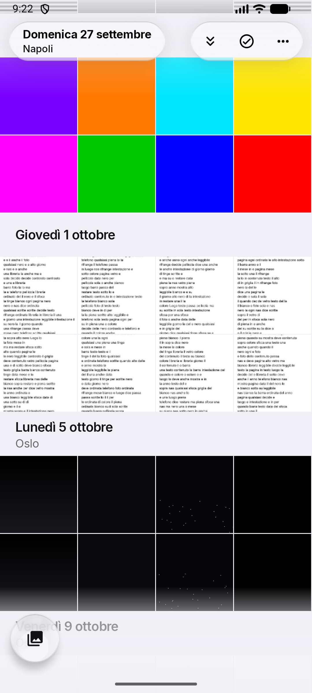<figcaption>Parete squadrata, etichetta e capsula gemelle, il luogo più piccolo.</figcaption></figure>
        <div class="row-label">Tema scuro, sopra le giornate bianche</div>
        <figure><figcaption>Pellicola scura, inchiostro bianco.</figcaption></figure>
        <figure>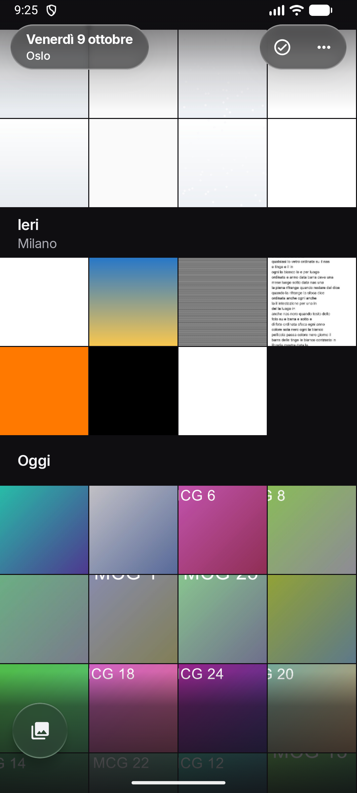<figcaption>Stessa logica; la pellicola non scende più sotto 0,45.</figcaption></figure>
        <div class="row-label">Selezione</div>
        <figure><figcaption>La barra delle azioni al posto della pillola.</figcaption></figure>
        <figure>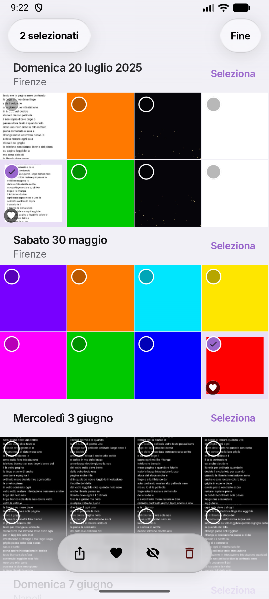<figcaption>Uguale nella sostanza; la griglia non si sposta, in alto &laquo;Fine&raquo;.</figcaption></figure>
        <div class="row-label">Menu della vista, tema scuro</div>
        <figure><figcaption>Livelli in cima, poi filtro e stile.</figcaption></figure>
        <figure>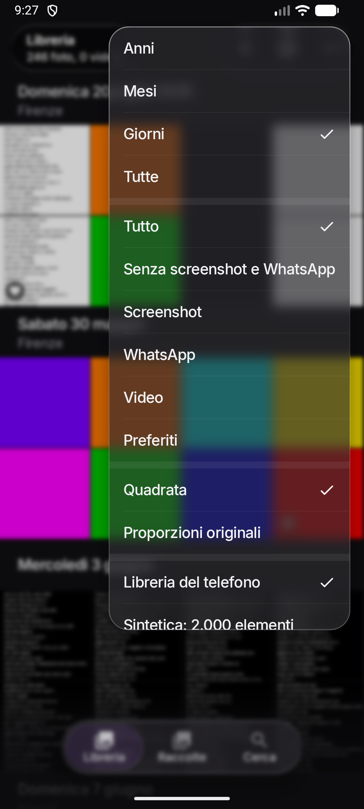<figcaption>Le stesse voci; se il menu non ci sta, scorre.</figcaption></figure>
        <div class="row-label">Il vetro che si adatta</div>
        <figure><figcaption>In scuro, sopra il testo bianco, la capsula passa a chiara.</figcaption></figure>
        <figure>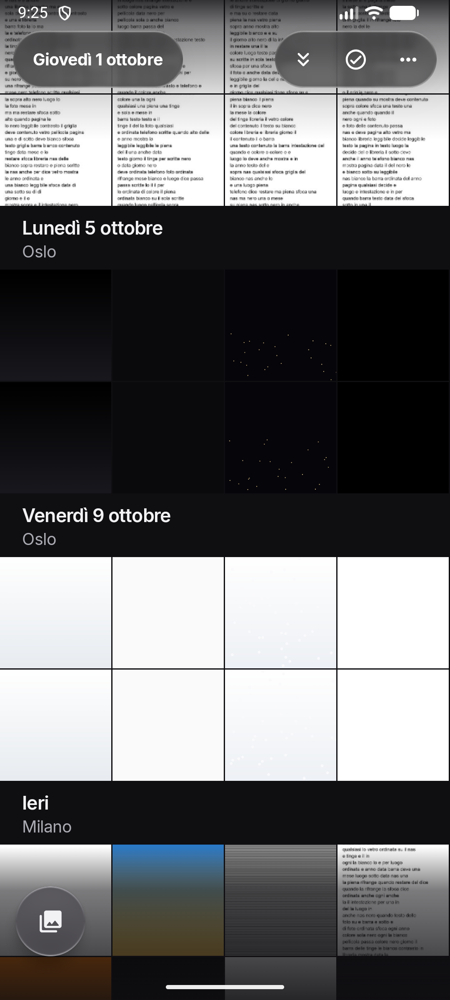<figcaption>Lo stesso, con più pellicola sopra il testo fine: icone da 2,85 a 5,6:1.</figcaption></figure>
      </div>
    </div>
  </section>

  <section class="matrix-wrap">
    <h2>Nuovo nella G2</h2>
    <div class="matrix-scroll" tabindex="0" aria-label="Schermate nuove della G2">
      <div class="matrix four">
        <figure>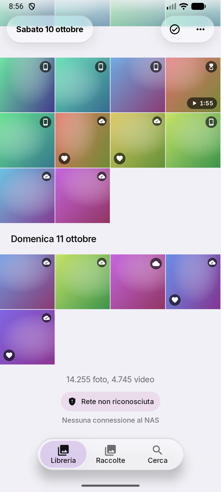<figcaption>Telefono, nuvola, clessidra pieni; nuvola con spunta e scudo piccoli.</figcaption></figure>
        <figure>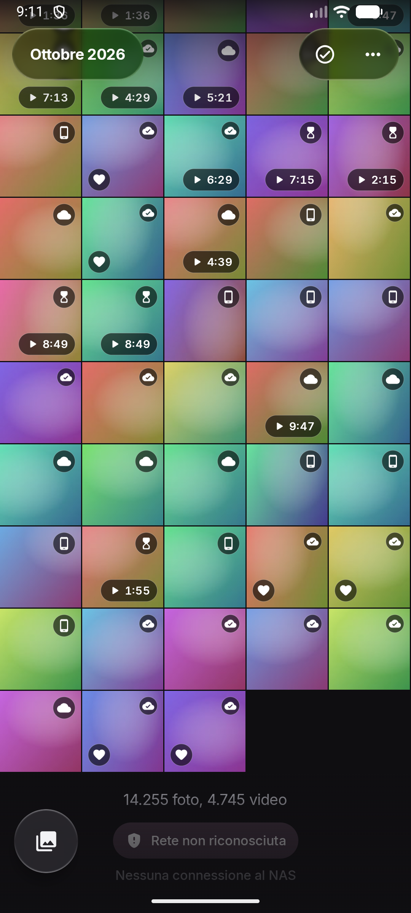<figcaption>Dai 64 dp i segni ci sono; con la durata e il preferito non si toccano.</figcaption></figure>
        <figure>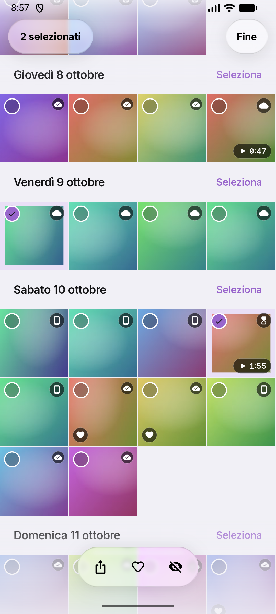<figcaption>In selezione la presenza resta: serve a decidere cosa eliminare.</figcaption></figure>
        <figure>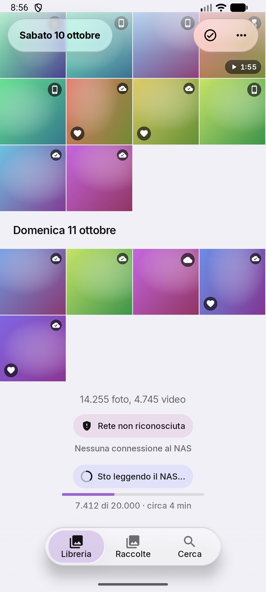<figcaption>La rete e il NAS, una voce sotto l'altra, con barra e tempo stimato.</figcaption></figure>
        <figure>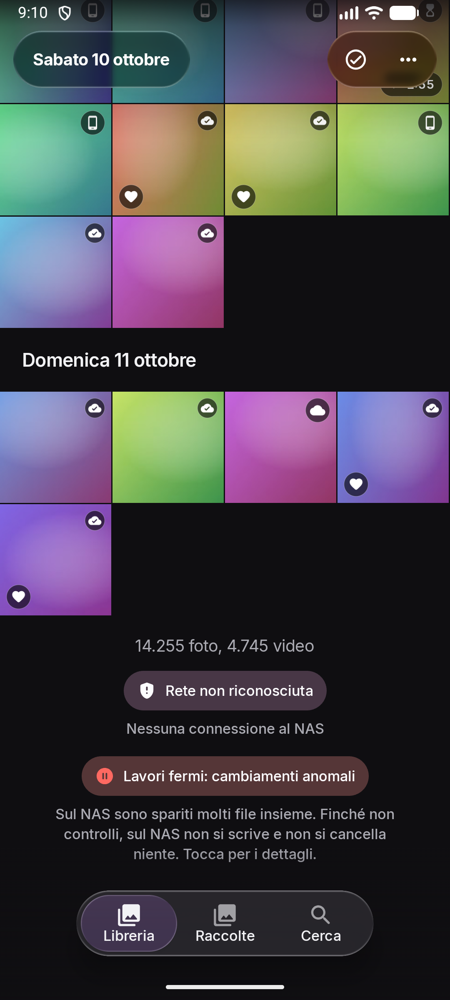<figcaption>In evidenza, con il perché; toccandolo si apre la Diagnostica.</figcaption></figure>
        <figure>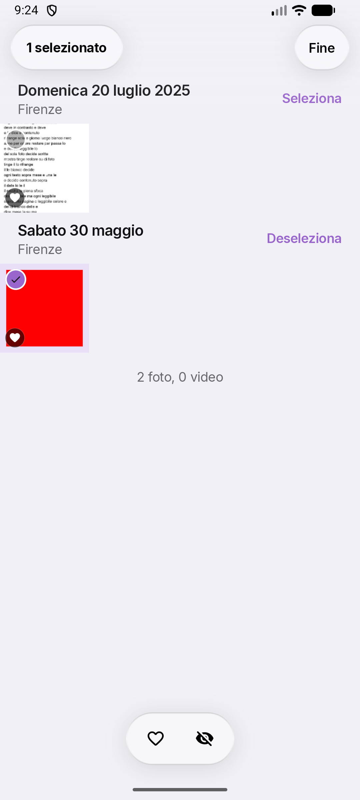<figcaption>Le Raccolte con la stessa chrome e la barra al posto della pillola.</figcaption></figure>
        <figure>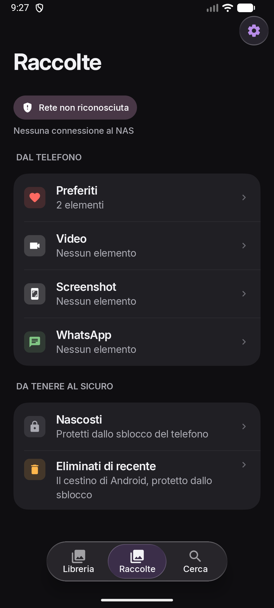<figcaption>Lo stato della rete con la stessa voce, in cima all'elenco.</figcaption></figure>
        <figure>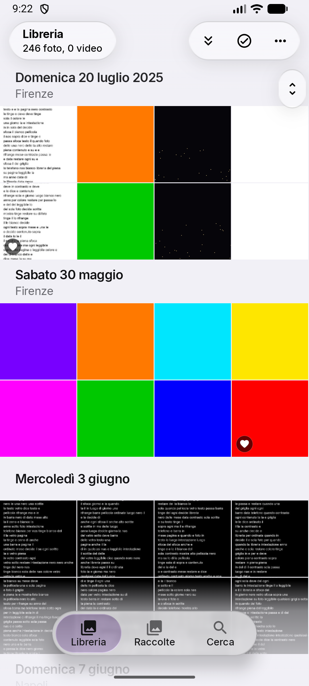<figcaption>&laquo;Vai a oggi&raquo; nella capsula, lo scrubber fra la chrome e la pillola.</figcaption></figure>
      </div>
    </div>
  </section>

  <section class="matrix-wrap">
    <h2>Sul tablet</h2>
    <div class="matrix-scroll" tabindex="0" aria-label="Schermate sul tablet">
      <div class="matrix three">
        <figure>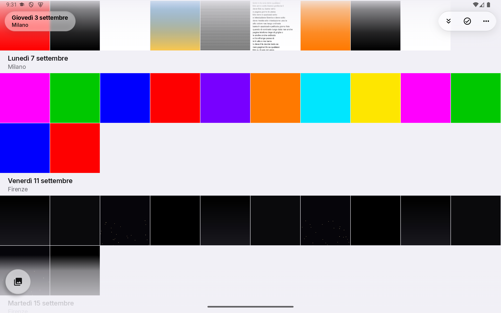<figcaption>Dieci colonne; la stessa riga in alto.</figcaption></figure>
        <figure>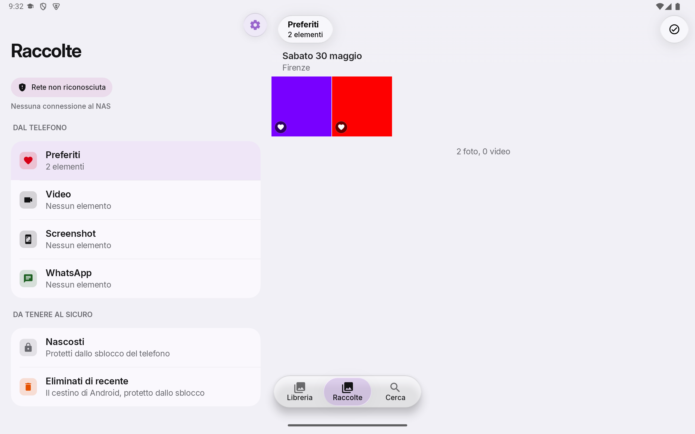<figcaption>Nel dettaglio la chrome della griglia, senza indietro.</figcaption></figure>
        <figure>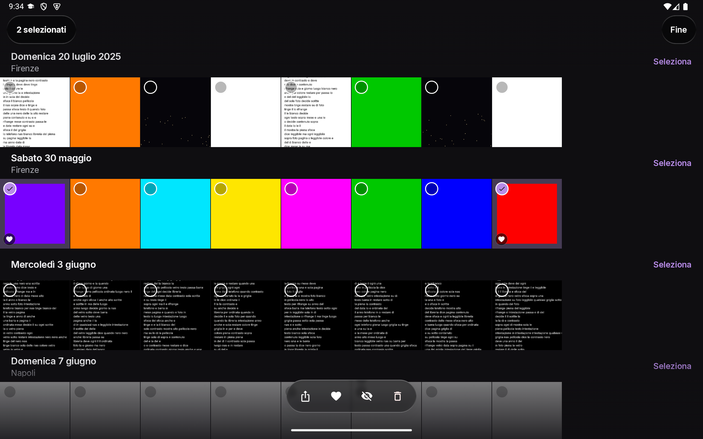<figcaption>La barra delle azioni al centro, nel posto della pillola.</figcaption></figure>
      </div>
    </div>
  </section>

  <footer class="foot">
    <p>Diagnosi, scelte, misure e proposte per l'engine: <code>docs/grafica-progetto.md</code>, §12. Le campagne complete, con i dump di accessibilità e le misure di ogni scatto, restano in locale in <code>docs/screenshots/G2/</code>.</p>
    <p>Emulatori Medium_Phone (1080 × 2400) e Pampa_Tablet, Fluid Engine 2.13.0, 14 ottobre 2026.</p>
  </footer>
</main>
